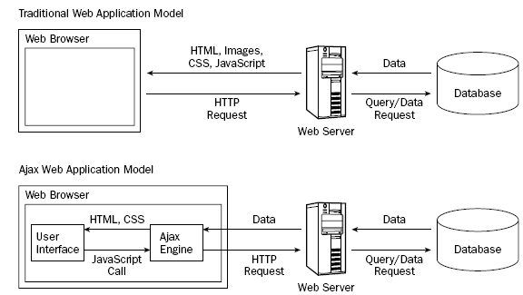

AJAX
Fundamentos de AJAX

Metodos nativos
ActiveXObject
(IES e inferiores)
XMLHttpRequest
API Fetch
Librerias Externas
jQuery.ajax()
Axios
AJAX no es una tecnologia en si mismo, se trata de varias tecnologias independientes que se unen
Estados de peticion
Codigos de estado de respuesta HTTP
Objeto XMLHttpRequest
API Fetch
API Fetch + Async - Await